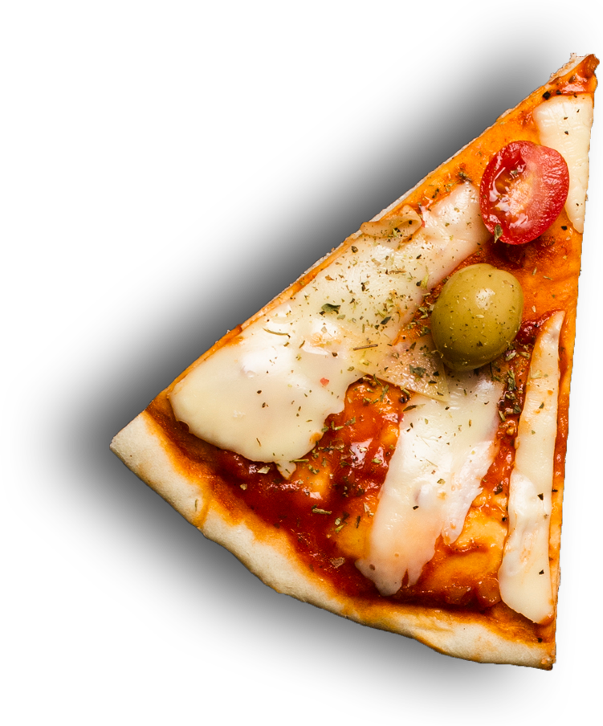
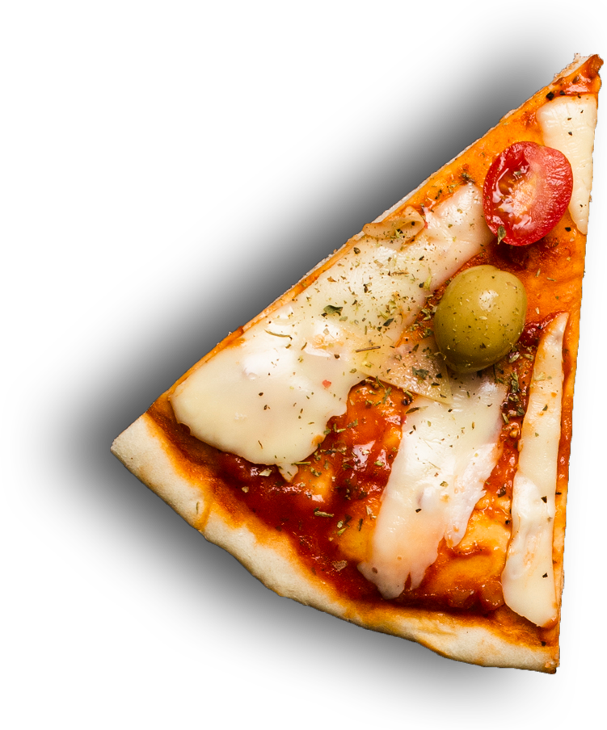

nos pate en couleur
Dans le cas des pate, il en existe une grande variété, mais il faut bien choisir celle qui vous intéresse pour préparer le repas que vous voulez, car chaque type de pate a ses propres caractéristiques particulières. Si vous voulez connaître 27 types de pate italiennes, leurs noms et les photos, vous êtes tombés sur le bon article !

pate bolognaise
C'est l'un des types de pâtes les plus populaires. Il s'agit d'un type de pâtes allongé et arrondi qui peut se combiner de plusieurs façons, même si l'accompagnement avec une bonne sauce bolognaise est ce qu'il y a de plus typique.

pate carbo
La recette traditionnelle fait l'objet de plusieurs variantes, mais les bases sont toujours les œufs (ou parfois seulement les jaunes d'œufs), les lardons (pancetta ou guanciale), le pecorino romano (fromage de brebis sec) et du poivre noir fraîchement moulu2. La recette italienne originale ne comporte pas de crème fraîche, mais de nombreuses variantes hors d'Italie incorporent cet ingrédient. Les variantes utilisant de la crème fraîche sont parfois dénommées carbonara ricca.

pate on fromage
Facile à préparer le gratin de pâte est le plat parfait pour manger maison même quand on est pressé. La technique ? On cuit ses pâtes la veille, on y met un peu d’huile ou de beurre pour qu’elles n’accrochent pas et le jour J, on n’a plus qu’à y ajouter de la crème, des légumes, de la viande et du fromage pour gratiner le tout. Simple comme bonjour, une quinzaine de minutes au four et le tour est joué. En plus, ce ne sont pas les recettes qui manquent.
fabication des pates
Commençons par le début : le blé et la farine. Comme vous savez, les pâtes italiennes (pas qu’elles d’ailleurs, la majorité des pâtes alimentaires) que vous trouvez dans leur paquet et qui sont les plus consommées, sont fabriquées à base de semoule de blé dur et d’eau, rien d’autre. La matière première et le procédé de fabrication ont donc une importance capitale. Le blé dur pousse généralement dans des climats chauds et arides, il est très résistant et nécessite de peu d’eau. C’est pourquoi on le trouve notamment dans le bassin Méditerranéen et dans des climats plus désertiques comme en Amérique du Nord, au Nord du Mexique et en Russie.
J’ai été agréablement surprise par tout ce soin et cette précision. Les pâtes sont une affaire sérieuse (en même temps, la Garofalo a besoin de s’assurer que ses pâtes qui vont voyager dans le monde entier aient une qualité constante pendant toute la durée de conservation).

pate fromage artisanale
Si vos gourmands ne jurent que par la viande, choisissez votre méthode pour peupler les pâtes, les options font la queue devant la casserole. Un gratin de pâtes fondant truffé de lardons, une salade de pâtes froide mêlée de poulet, des lasagnes surprise aux champignons et au jambon… Plan B ? Misez sur l’originalité avec un gratin de farfalles pailleté de jambon et de petits pois, ou assurez la tradition en spaghetti à la bolognaise comme on les aime !
en savoir pluspate campagnard artisanle
Chou campagnard. Pizza campagnarde. Biscuits tortis faciles (pour utiliser les restes de pâte brisée Pommes de terre campagnardes. Omelette campagnarde. Gaufres campagnardes. Soupe campagnarde. Assiette campagnarde. ma quiche campagnarde express. Calzone campagnarde. Riz à la campagnarde. Ma poêlée campagnarde. Pâte … Instructions de recette Egoutter les champignons et les faire sauter à la poêle dans un peu de matière grasse (beurre ou … Ajouter les lardons et faire dorer le tout sur feu vif. Baisser le feu et saupoudrer d'oignon et de persil. Bien mélanger et poursuivre la cuisson quelques … Ne pas laisser les oignons prendre couleur.
en savoir plus
royal pizza
Pizza maison : le plein de recettes variées et délicieuses. Réussir sa pizza à la maison ? Facile, avec nos recettes de pizzas testées et approuvées par les lecteurs. Retrouvez les meilleures recettes de pizzas sur cette page, de la pâte à pizza maison dont on vous donne tous les secrets, aux idées de garnitures, traditionnelles ou plus originales. Sauce tomate, jambon, fromage et ...
 


pizza royal
Mozzarella Tomate, mozzarella, olives, basilic
pizza naples
Marguerita Tomate, mozzarella, jambon, olives
pizza neptune
Siciliana Tomate, carpes, anchois, olives
Envie de manger une pizza faite à l'italienne ? Vous cherchez des saveurs variées et uniques ? Que ce soit pour manger sur place ou encore à emporter, votre pizzeria vous garantit des pâtes toutes fraîches, faites maison, fines et croustillantes.
descriptif
L’Auberge Le Passe-temps, votre pizzeria à Montchanin vous reçoit dans un décor traditionnel dans lequel les poutres sont apparentes et les murs recouverts de pierres anciennes. Dans notre restaurant pizzeria, vous pourrez vous détendre et prendre du plaisir à savourer de bons repas fins et gourmands. Passionnée et professionnelle, votre équipe vous propose des services à la hauteur de toutes vos demandes grâce à ses plats généreux et délicieux.